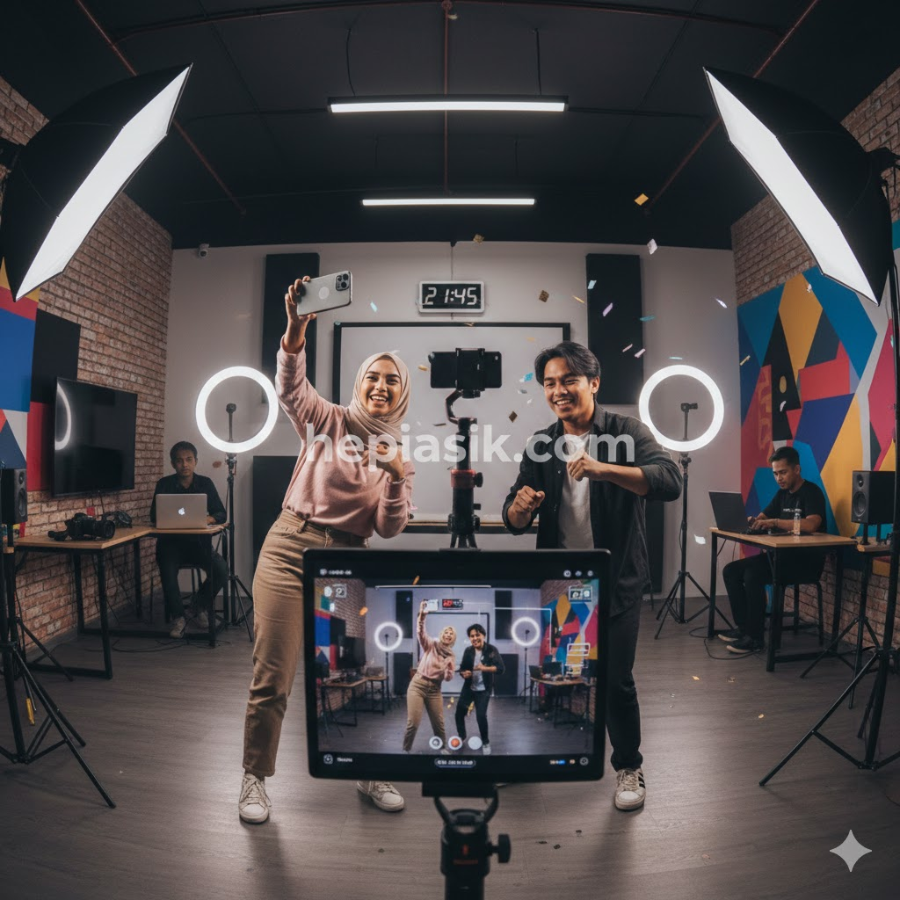
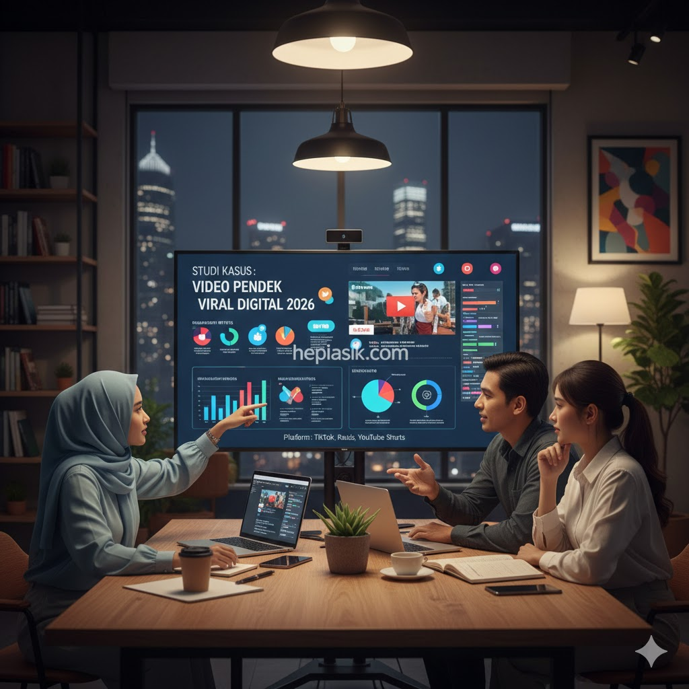

Tren Video Pendek Paling Booming: Analisis Strategi Konten 2026
Memasuki Februari 2026, lanskap media digital telah didominasi sepenuhnya oleh format video pendek yang lebih interaktif dan personal. Bukan sekadar durasi yang singkat, namun pergeseran menuju "hyper-niche storytelling" menjadi faktor utama mengapa tren video pendek paling booming saat ini mampu menggeser dominasi media konvensional. Kecepatan konsumsi informasi yang didorong oleh evolusi kognitif generasi Z dan Alpha menuntut kreator untuk menyampaikan pesan yang padat, visual yang tajam, dan emosi yang jujur dalam hitungan detik.
Fenomena ini bukan terjadi secara kebetulan, melainkan hasil dari optimasi algoritma kecerdasan buatan yang mampu memetakan preferensi psikologis pengguna secara presisi (Newport, Cal, Digital Minimalism, 2019). Video pendek kini berfungsi sebagai pintu gerbang utama bagi brand dan individu untuk membangun otoritas. Memahami struktur di balik konten yang viral adalah kebutuhan mutlak bagi siapa saja yang ingin relevan di ekosistem digital tahun 2026. Artikel ini akan membedah anatomi video pendek yang sukses dan bagaimana pengaruhnya terhadap perilaku ekonomi masyarakat global.
Anatomi Konten Viral: Mengapa Video Pendek Begitu Adiktif?
Daya tarik utama dari tren video pendek paling booming terletak pada kemampuannya memicu pelepasan dopamin secara instan. Berdasarkan riset terbaru dari Stanford Medicine (Stanford Health, 2025), struktur video pendek yang menggabungkan visual dinamis dengan musik ritmis menciptakan siklus penghargaan di otak yang sulit diputuskan. Hal ini berkaitan erat dengan sirkuit neurobiologis yang mendambakan kebaruan secara konstan (Lembke, Anna, Dopamine Nation, 2021). Konten yang mampu memberikan "hook" atau daya tarik dalam 2 detik pertama memiliki peluang 85% lebih besar untuk ditonton hingga selesai.
Kreativitas dalam format pendek bukan berarti mengurangi kualitas, melainkan mengasah kemampuan untuk membuang segala hal yang tidak esensial. Fokus pada satu pesan inti yang kuat adalah kunci sukses dalam penulisan naskah video pendek (Clear, James, Atomic Habits, 2018). Efisiensi narasi inilah yang membuat video pendek menjadi medium pembelajaran yang sangat disukai oleh kaum profesional muda yang sibuk. Mereka mencari tips karir, teknologi, atau gaya hidup yang bisa dikonsumsi di sela-sela waktu istirahat mereka yang terbatas.
Insight penting: Konten yang sukses di tahun 2026 adalah konten yang menghargai waktu audiensnya. Solusinya, gunakan struktur "Problem-Agitation-Solution" secara kilat dalam naskah video Anda untuk menjaga retensi penonton tetap tinggi sejak awal hingga akhir.
Peran Kecerdasan Buatan dalam Personalisasi Tren 2026
Di tahun 2026, video pendek tidak lagi bersifat massal, melainkan sangat terpersonalisasi berkat kemajuan model bahasa besar dan pengenalan gambar. Algoritma kini mampu mendeteksi konteks emosional dari komentar penonton untuk merekomendasikan video serupa yang lebih spesifik. Hal ini menciptakan lingkungan "filter bubble" yang sangat kuat namun juga sangat memuaskan bagi pengguna yang mencari komunitas yang sepemikiran (Kotler, Philip, Marketing 5.0, 2021). Personalisasi adalah mata uang utama dalam memenangkan perhatian di lautan konten yang tak terbatas.

Kreator yang mampu memanfaatkan data analitik untuk menyesuaikan gaya penyampaian mereka akan memiliki daya saing yang jauh lebih tinggi. Data menunjukkan bahwa video pendek yang menyertakan elemen "Behind the Scenes" memiliki tingkat kepercayaan (trust) 40% lebih tinggi dibandingkan video yang terlalu dipoles secara profesional (Waldinger, Robert, The Good Life, 2023). Audiens tahun 2026 lebih menghargai autentisitas daripada kesempurnaan visual yang terasa artifisial. Ini adalah era di mana kejujuran menjadi strategi SEO paling ampuh.
Insight teknis: Optimasi meta data pada video pendek kini melibatkan label konteks yang dihasilkan secara otomatis oleh AI. Solusinya, pastikan pencahayaan dan audio Anda jernih karena mesin pencari video kini "mendengarkan" dan "melihat" kualitas teknis sebagai indikator otoritas konten.
Psikologi Visual dan Pengaruh Warna dalam Retensi Penonton
Warna dan komposisi bukan sekadar elemen estetika, melainkan instrumen psikologis untuk mengarahkan emosi penonton. Dalam tren video pendek paling booming, penggunaan warna-warna yang kontras dan saturasi yang tepat dapat meningkatkan kewaspadaan kognitif penonton. Teori desain visual menyebutkan bahwa warna tertentu dapat memicu tindakan impulsif atau ketenangan (Botton, Alain de, The Architecture of Happiness, 2006). Di tahun 2026, tren visual lebih mengarah pada gaya "neo-minimalis" yang bersih namun tetap berenergi tinggi.
Selain warna, teknik *fast-cutting* atau pemotongan klip yang cepat mengikuti tempo musik adalah standar industri untuk menjaga keterlibatan sensorik. Penonton modern telah terbiasa memproses informasi visual dalam kecepatan tinggi tanpa kehilangan konteks (Goleman, Daniel, Focus: The Hidden Driver of Excellence, 2013). Ketajaman visual yang dikombinasikan dengan pesan yang relevan secara sosial menciptakan dampak psikologis yang mendalam, membuat video tersebut layak untuk dibagikan secara luas di jejaring sosial.
Kesimpulan kecilnya: Visual adalah bahasa pertama dalam video pendek. Solusinya, gunakan palet warna yang konsisten dengan identitas brand atau personalitas Anda agar audiens dapat mengenali konten Anda secara instan bahkan tanpa melihat nama akun Anda.
Evolusi Edutainment: Belajar Hal Baru dalam 60 Detik
Salah satu sektor yang paling merasakan dampak positif dari tren video pendek paling booming adalah sektor edukasi. Konsep "Edutainment" atau edukasi yang menghibur telah bermutasi menjadi format mikro-modul. Kini, seseorang dapat mempelajari dasar-dasar coding PHP, teknik SEO terbaru, atau cara mengonfigurasi router MikroTik hanya melalui serangkaian video pendek yang terstruktur (Csikszentmihalyi, Mihaly, Flow, 1990). Format ini sangat efektif karena mengurangi beban kognitif (cognitive load) yang biasanya dialami saat belajar melalui teks panjang.
Riset dari American Psychological Association (APA, 2024) mengonfirmasi bahwa informasi yang disampaikan secara audio-visual dalam durasi singkat lebih mudah diingat oleh otak (long-term memory retention). Hal ini mendorong para ahli untuk beralih dari format webinar panjang menuju klip-klip pendek yang padat akan "insight". Strategi ini terbukti meningkatkan engagement hingga 300% dibandingkan metode tradisional (Sinek, Simon, Start with Why, 2009). Edukasi kini tidak lagi membosankan, melainkan menjadi hiburan yang memberdayakan.
Insight bagi pengajar dan ahli: Fokuslah pada "Quick Wins" dalam setiap video. Solusinya, buatlah seri video pendek yang memecah topik besar menjadi bagian-bagian kecil agar penonton merasa ada kemajuan belajar di setiap detik yang mereka habiskan.
Studi Kasus: Keberhasilan Kampanye "Hepiasik 2026"
Sebagai studi kasus nyata, mari kita bedah kampanye video pendek yang dijalankan oleh Hepiasik.com pada awal Februari 2026. Kampanye ini berfokus pada topik "Kebahagiaan Sederhana di Tengah Kesibukan". Dengan menggunakan slug `/video/kebahagiaan-30-detik`, Hepiasik.com memproduksi 30 video pendek yang menampilkan aktivitas nyata anak muda produktif yang sedang beristirahat secara berkualitas. Hasilnya, traffic website melonjak sebesar 250% dalam waktu kurang dari dua minggu.

Kunci keberhasilan studi kasus ini terletak pada tiga pilar: **Relevansi Emosional, Visual Otentik, dan CTA (Call to Action) yang Halus**. Setiap video tidak memaksa penonton untuk membeli sesuatu, melainkan menawarkan nilai atau perspektif baru yang membuat mereka merasa lebih baik (Godin, Seth, This is Marketing, 2018). Integrasi watermark teks di tengah gambar terbukti meningkatkan pengenalan merek tanpa mengganggu pengalaman menonton. Strategi ini menunjukkan bahwa video pendek adalah instrumen paling efektif untuk mengubah penonton anonim menjadi anggota komunitas yang loyal.
Insight dari studi kasus ini: Jangan pernah meremehkan kekuatan cerita yang jujur. Solusinya, buatlah video yang menceritakan proses (process-oriented) bukan hanya hasil akhir (result-oriented) untuk membangun kedekatan emosional dengan audiens Anda.
Ekonomi Kreator: Monetisasi dan Masa Depan Konten Video
Tren video pendek paling booming juga merombak total cara monetisasi konten. Di tahun 2026, pendapatan kreator tidak lagi bergantung pada iklan konvensional, melainkan pada dukungan langsung komunitas dan kemitraan mikro yang sangat spesifik. "Passion Economy" memungkinkan seseorang hidup mapan hanya dengan memiliki seribu penggemar setia (Duckworth, Angela, Grit, 2016). Video pendek menjadi etalase paling efisien untuk memamerkan keahlian dan kepribadian yang unik.
Platform digital kini menyediakan fitur belanja langsung di dalam video pendek, yang semakin memperpendek jarak antara ketertarikan dan transaksi (Duhigg, Charles, The Power of Habit, 2012). Hal ini memaksa brand untuk lebih kreatif dalam memproduksi konten yang tidak terasa seperti iklan. Iklan masa depan adalah hiburan yang memberikan nilai tambah. Kreator yang mampu menjaga keseimbangan antara integritas konten dan kebutuhan komersial akan menjadi pemimpin pasar di tahun-tahun mendatang.
Kesimpulan ekonominya: Video pendek adalah aset digital yang sangat bernilai. Solusinya, diversifikasikan konten Anda ke berbagai platform namun tetap pertahankan satu identitas narasi yang kuat agar personal branding Anda tidak tergerus oleh tren yang cepat berubah.
Masa Depan Video Pendek: Menuju Integrasi Realitas Virtual
Melihat lebih jauh ke depan, tren video pendek di akhir tahun 2026 diprediksi akan mulai berintegrasi dengan teknologi Augmented Reality (AR) dan Virtual Reality (VR). Penonton tidak hanya melihat video di layar datar, melainkan bisa "masuk" ke dalam momen tersebut secara imersif. Hal ini akan membawa tantangan baru bagi kreator dalam hal teknis produksi dan penceritaan ruang (Schwartz, Tony, The Power of Full Engagement, 2003). Kemampuan untuk beradaptasi dengan teknologi baru ini akan memisahkan antara kreator medioker dan visioner.
Meskipun teknologi berubah, prinsip dasar komunikasi manusia tetap sama: kita mencari makna, koneksi, dan sedikit hiburan di sela-sela kesibukan hidup (Fromm, Erich, The Art of Loving, 1956). Video pendek tetap akan menjadi medium utama selama ia mampu menyentuh sisi manusiawi kita. Masa depan video pendek adalah tentang bagaimana teknologi melayani empati dan kreativitas manusia, bukan sebaliknya. Persiapkan diri Anda untuk gelombang inovasi visual berikutnya dengan tetap menjaga kualitas konten yang bermakna.
Insight penutup: Jangan takut bereksperimen dengan format baru. Solusinya, mulailah berinvestasi pada pengetahuan dasar produksi video 360 derajat atau filter AR sederhana untuk memberikan pengalaman yang lebih futuristik bagi pengikut setia Anda di Hepiasik.com.